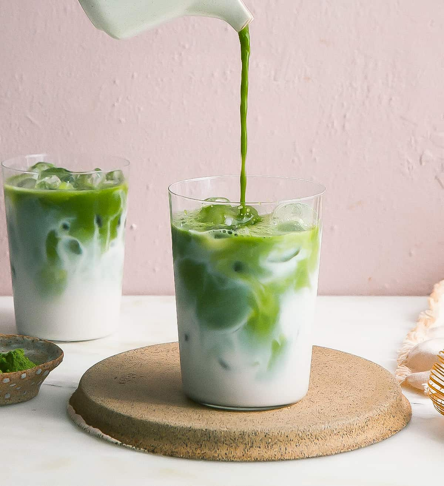
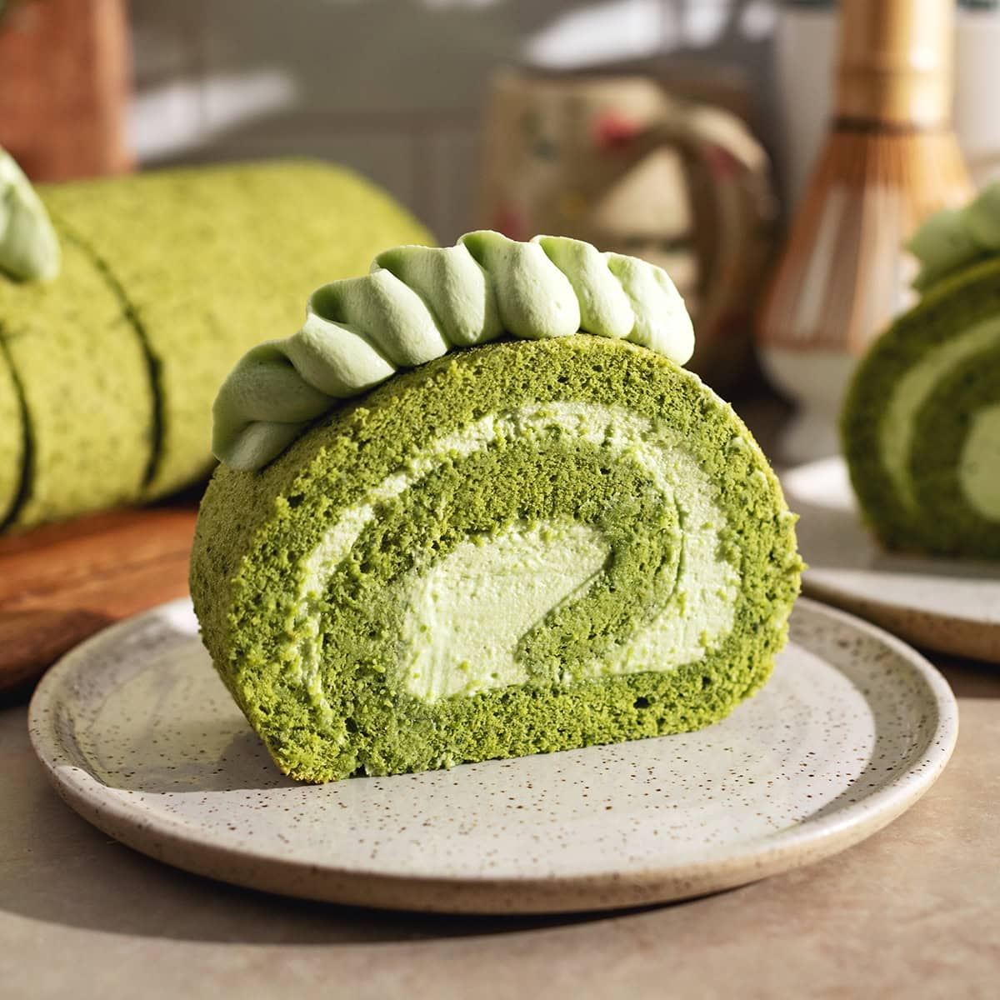

Use
Traditional Preparation
Matcha is traditionally consumed by whisking the powder with hot water. There are two main styles: koicha (thick tea) and usucha (thin tea). Koicha uses about 4 grams of matcha with 30 ml of water at 80°C, producing a thick, paste-like consistency that is stirred rather than whisked. Usucha uses half the matcha in twice the volume of water at 90°C, and is whisked to a light froth. Koicha is made from higher-grade matcha and delivers a more intense, pure matcha taste.
The Tea Ceremony
The Japanese tea ceremony, known as chanoyu (茶の湯) or sadō (茶道), centers on the preparation, serving, and drinking of matcha as a meditative and spiritual practice. Drinking koicha is considered the main part of the ceremony, while usucha serves as a secondary element.
Matcha is stored in special containers — chaire for koicha and natsume for usucha — and scooped out with a chashaku, a traditional bamboo spoon. The powder is placed in a chawan (tea bowl), combined with hot water, and stirred with a chasen (bamboo whisk). Sweets are eaten before the tea to allow a prolonged appreciation of the matcha's flavor.
Japanese Cuisine
Matcha has long been used as a flavoring and coloring agent in Japanese food. It appears in traditional confections such as mochi, manjū, monaka, and wagashi. It is also mixed into soba noodles, used as a topping for shaved ice (kakigōri), blended with salt to season tempura (matcha-jio), and added to genmaicha to create matcha-iri genmaicha.

Modern Drinks
Matcha has become a global café staple. Matcha lattes — made by whisking matcha with steamed milk — are now offered by major chains including Starbucks and Dunkin' Donuts. Iced matcha drinks, matcha smoothies, matcha milkshakes, and matcha nitro cold brews have also gained widespread popularity. The beverage's photogenic bright green color has made it especially popular on social media platforms like Instagram and TikTok.

Western Desserts and Snacks
Matcha has been embraced in Western-style baking and confections. It is used to flavor cakes, Swiss rolls, cheesecake, cookies, cream puffs, pudding, mousse, ice cream, and frozen yogurt. Well-known snack brands have released matcha versions of their products — including matcha Pocky and matcha Kit Kats, both originating from Japan and gaining international followings. Matcha-flavored chocolates and candies are now widely available around the world.